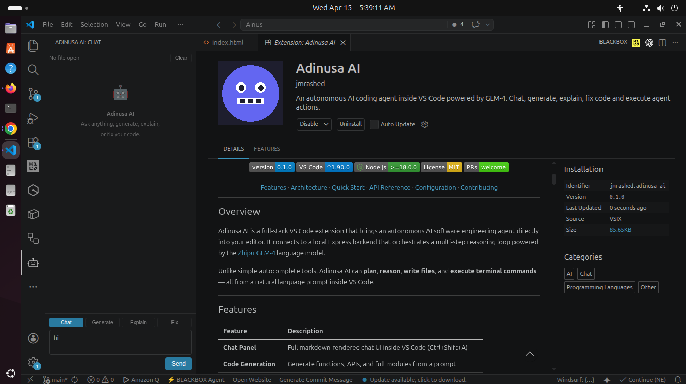

Adinusa AI autonomously plans, reasons, writes files, and executes commands — all from a natural language prompt. Works with any major LLM provider.
See it in action
See how the agent plans, searches, reads files, writes code, and executes commands — all from a simple prompt.

The agent plans first, then searches the workspace, reads relevant files, and iterates until the task is complete.
A complete AI coding workflow inside VS Code — from idea to implementation.
Full markdown-rendered chat interface with syntax highlighting. Open instantly with Ctrl+Shift+A.
AI plans multi-step workflows. Review inline action cards with risk indicators and apply with one click.
Switch between Chat, Generate, Explain, and Fix modes with a single click. The AI adapts its behavior accordingly.
Use GLM-4, GPT-4, Claude, Gemini, or Ollama. Switch providers anytime without restarting.
Automatically captures active file, selection, and diagnostics. The AI always knows what you're working on.
Agent can list and search files with `list_files` and `search_files` tools before making changes.
Fenced code blocks are automatically extracted and inserted into the editor with one click. No manual copying needed.
Path traversal protection, command blocklist, rate limiting, workspace sandboxing, and Helmet security headers.
A seamless three-step workflow that brings AI-powered automation to your editor.
Type a natural language prompt. The agent automatically captures your active file, selection, and any diagnostics.
The agent plans steps, searches the workspace, reads files, and iterates with the LLM until the task is complete.
Approve pending file writes and commands via inline action cards. Code blocks are applied to the editor automatically.
Switch between providers anytime. Your API keys stay on your machine — no data leaves your control.
Flash and standard models with strong code reasoning
Industry standard for code generation and analysis
Advanced reasoning with strong safety alignment
Multimodal AI with extensive knowledge base
Run models locally — no API key required
Install the extension, configure your API key, and start coding with AI.
git clone https://github.com/jmrashed/adinusa-ai.git
cd adinusa-ai
cp backend/.env.example backend/.envbash scripts/install.sh
cd backend && npm run devOpen adinusa-ai/ in VS Code
Press F5